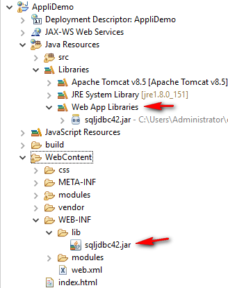
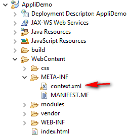
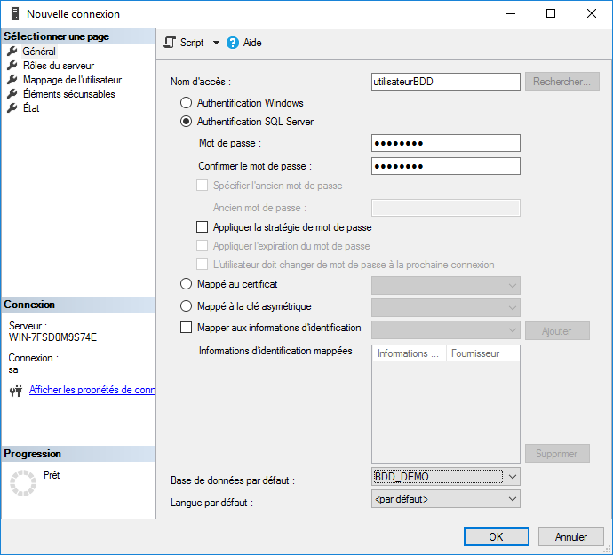
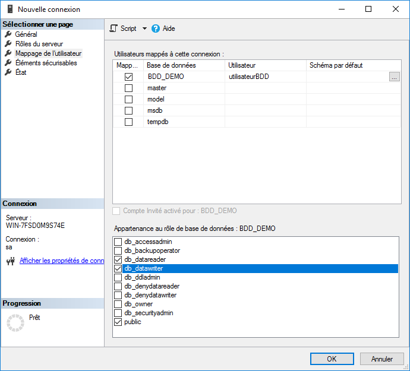

Ajouter le pilote JDBC dans le répertoire /WEB-INF/lib de l'application.
Observer l'ajout automatique de la librairie dans le noeud "Web App Libraries". Cela signifie qu'elle sera automatiquement déployée dans le répertoire de déploiement de l'application.
Créer le fichier context.xml dans le répertoire META-INF.
Configurer un pool de connexion dans ce fichier avec les caractéristiques suivantes :
<?xml version="1.0" encoding="UTF-8"?>
<Context>
<Resource
name="jdbc/pool_cnx"
driverClassName="com.microsoft.sqlserver.jdbc.SQLServerDriver"
type="javax.sql.DataSource"
url="jdbc:sqlserver://localhost;databasename=BDD_DEMO"
username="utilisateurBDD"
password="Pa$$w0rd"
maxTotal="100"
maxIdle="30"
maxWaitMillis="10000"
/>
</Context>
Créer la base de données BDD_DEMO et exécuter le script SQL suivant :
CREATE TABLE AVIS
(
identifiant int IDENTITY(1,1) CONSTRAINT PK_AVIS PRIMARY KEY,
description varchar(150) NOT NULL,
note tinyint NOT NULL CONSTRAINT CK_AVIS_note CHECK(note between 1 and 5)
);
Pour rappel, voici la création d'un utilisateur ayant les droits de lecture et d'écriture sur la base de données BDD_DEMO:
Etape 1:
Etape 2:
Le lien suivant pointe vers une servlet se connectant à la base de données en utilisant le pool de connexions : /modules/module4/ServletTestPoolConnexion
Voici le code de la servlet:
package fr.eni.javaee.module4;
import java.io.IOException;
import java.io.PrintWriter;
import java.sql.Connection;
import java.sql.SQLException;
import javax.naming.Context;
import javax.naming.InitialContext;
import javax.naming.NamingException;
import javax.servlet.ServletException;
import javax.servlet.annotation.WebServlet;
import javax.servlet.http.HttpServlet;
import javax.servlet.http.HttpServletRequest;
import javax.servlet.http.HttpServletResponse;
import javax.sql.DataSource;
/**
* Servlet implementation class ServletTestPoolConnexion
*/
@WebServlet("/modules/module4/ServletTestPoolConnexion")
public class ServletTestPoolConnexion extends HttpServlet {
private static final long serialVersionUID = 1L;
/**
* @see HttpServlet#HttpServlet()
*/
public ServletTestPoolConnexion() {
super();
}
/**
* @see HttpServlet#doGet(HttpServletRequest request, HttpServletResponse response)
*/
protected void doGet(HttpServletRequest request, HttpServletResponse response) throws ServletException, IOException {
PrintWriter out= response.getWriter();
//Création d'un objet de type Context permettant la recherche d'une ressource nommée dans l'arbre JNDI
try {
Context context = new InitialContext();
//Recherche de la ressource
DataSource dataSource = (DataSource)context.lookup("java:comp/env/jdbc/pool_cnx");
//Demande d'une connexion. La méthode getConnection met la demande en attente tant qu'il n'y a pas de connexion disponible
Connection cnx = dataSource.getConnection();
//Exploitation de la connexion
out.print("La connexion est "+ (cnx.isClosed()?"fermée":"ouverte")+".");
//Libération de la connexion. Elle n'est pas fermée mais remise dans le pool
cnx.close();
} catch (NamingException | SQLException e) {
response.setStatus(HttpServletResponse.SC_INTERNAL_SERVER_ERROR);
e.printStackTrace();
out.println("Une erreur est survenue lors de l'utilisation de la base de données : " + e.getMessage());
}
out.close();
}
/**
* @see HttpServlet#doPost(HttpServletRequest request, HttpServletResponse response)
*/
protected void doPost(HttpServletRequest request, HttpServletResponse response) throws ServletException, IOException {
doGet(request, response);
}
}